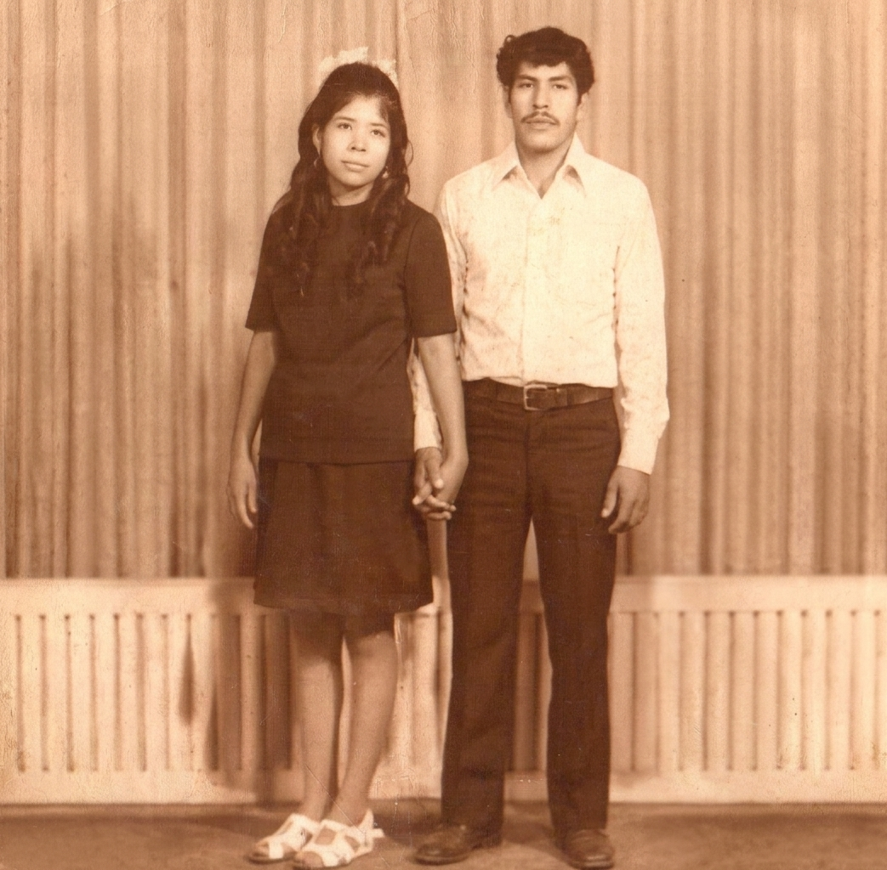

Proyecto familiar · Indie pop latino
LoretoS
Música que
viene de casa.
Nueve hermanos. Una misma raíz.

Sonido
Lo que
estamos haciendo.
Canciones nacidas entre sobremesas, guitarras y la memoria compartida de una casa llena.
En movimiento
La música
también se ve.
Sesiones, videoclips y momentos de cerca. Este espacio crecerá con cada historia que compartamos.
Nuestra historia
Una familia,
un mismo pulso.
LoretoS nace de una historia compartida: somos nueve hermanos, seis mujeres y tres hombres, unidos por la casa que nos vio crecer y por una forma de entender la música como encuentro.
José Loreto, Rodolfo Loreto y Jhorge Loreto están al frente del proyecto musical. Detrás, alrededor y dentro de cada canción están también los nueve: la raíz, la memoria y la voz de una familia.
“Nueve hermanos.
Una misma raíz.”
La familia
suena junta.
Galería
Momentos
de casa.
Ensayos, grabaciones y la vida alrededor de la música. Un álbum en construcción.
Novedades
Lo que
viene.
Contacto
Hablemos
de música.
Para prensa, booking o simplemente para saludar, escríbenos. La música siempre encuentra una puerta abierta.
correo@loretov.com